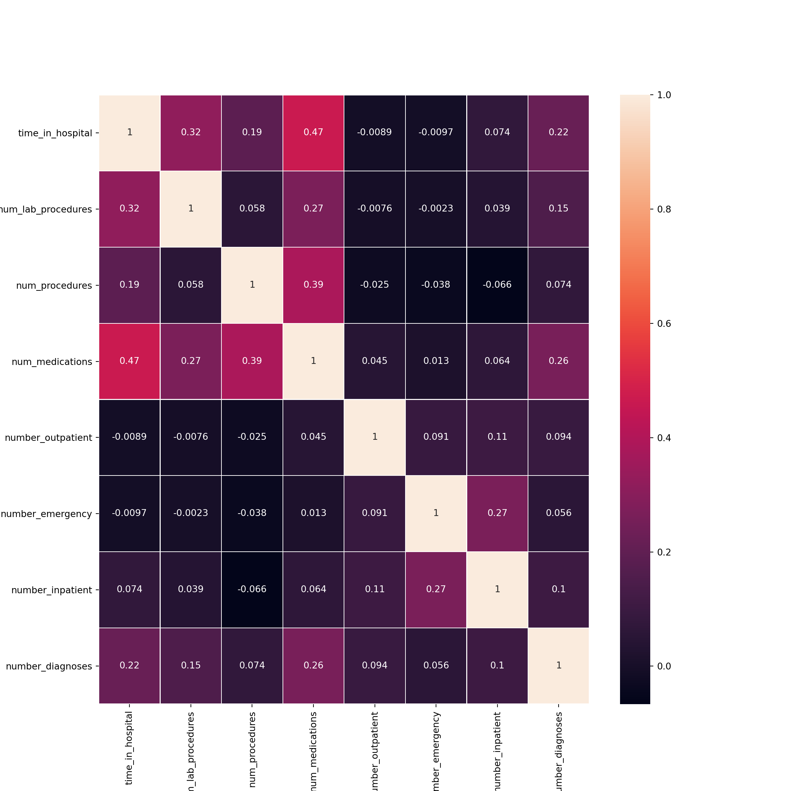
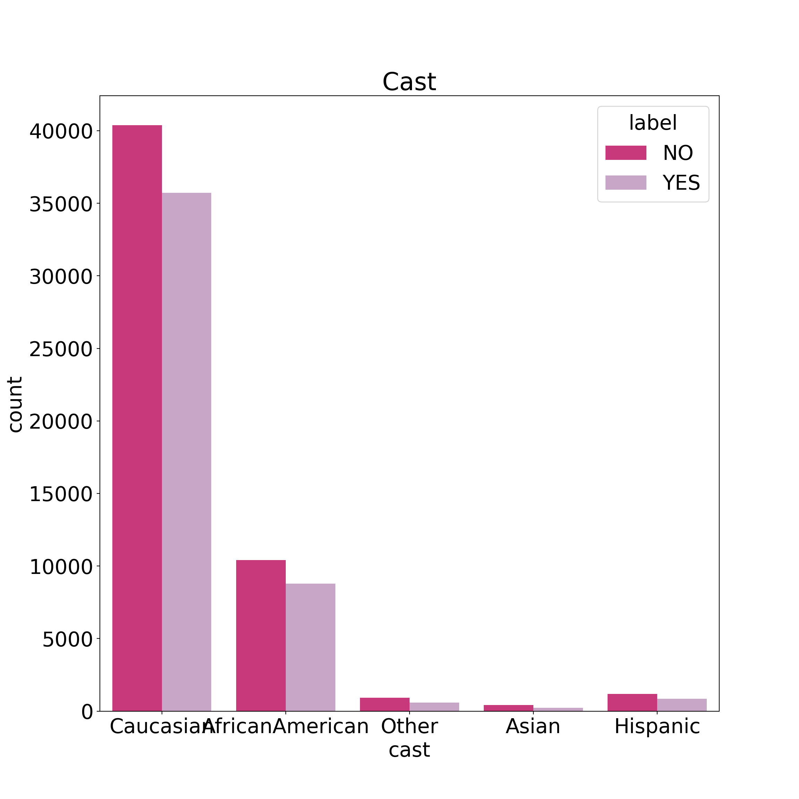
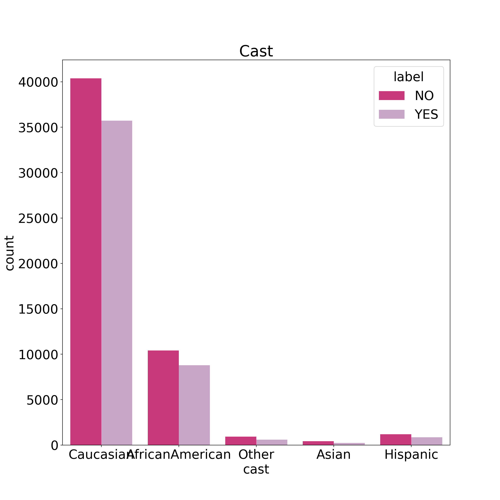
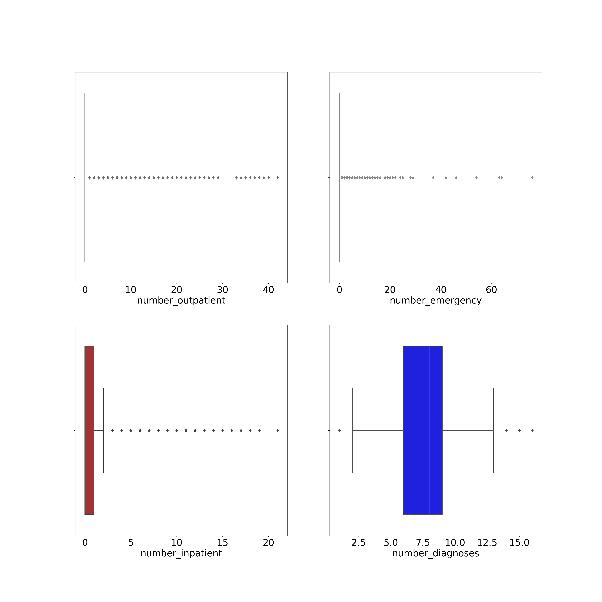
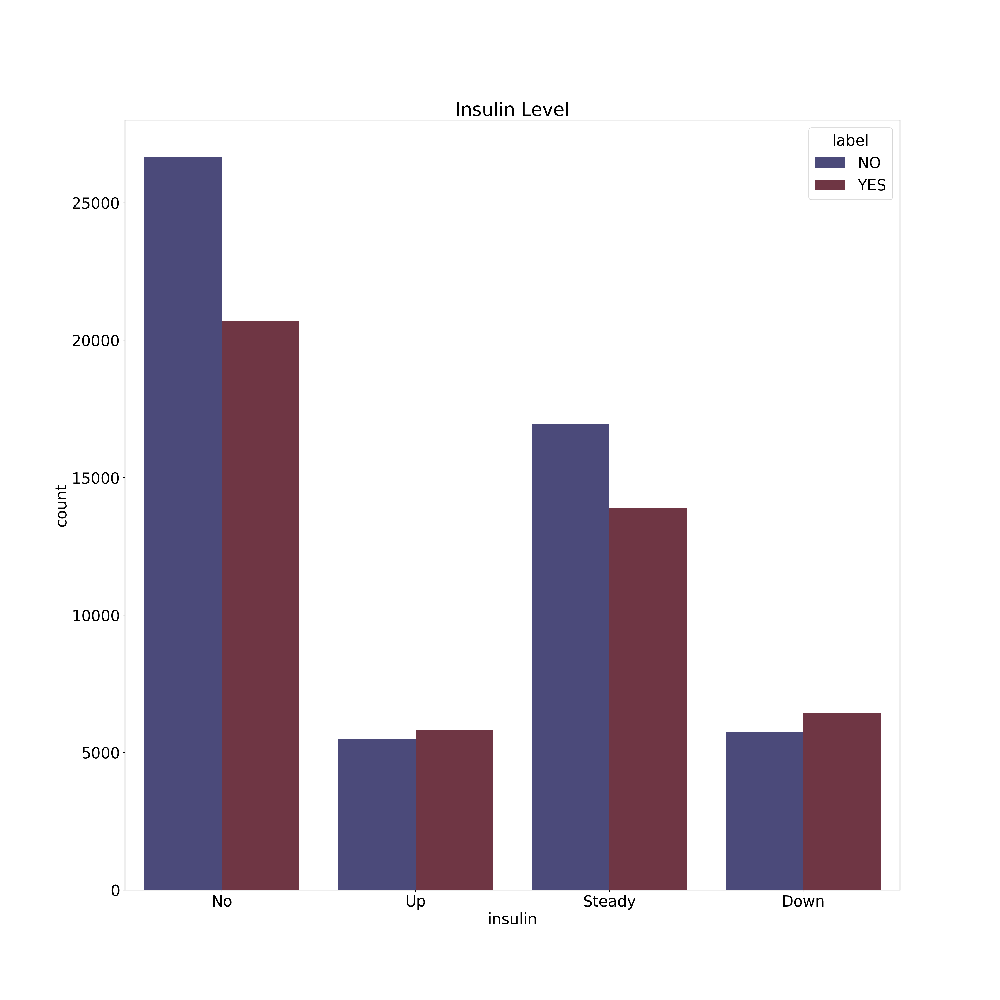
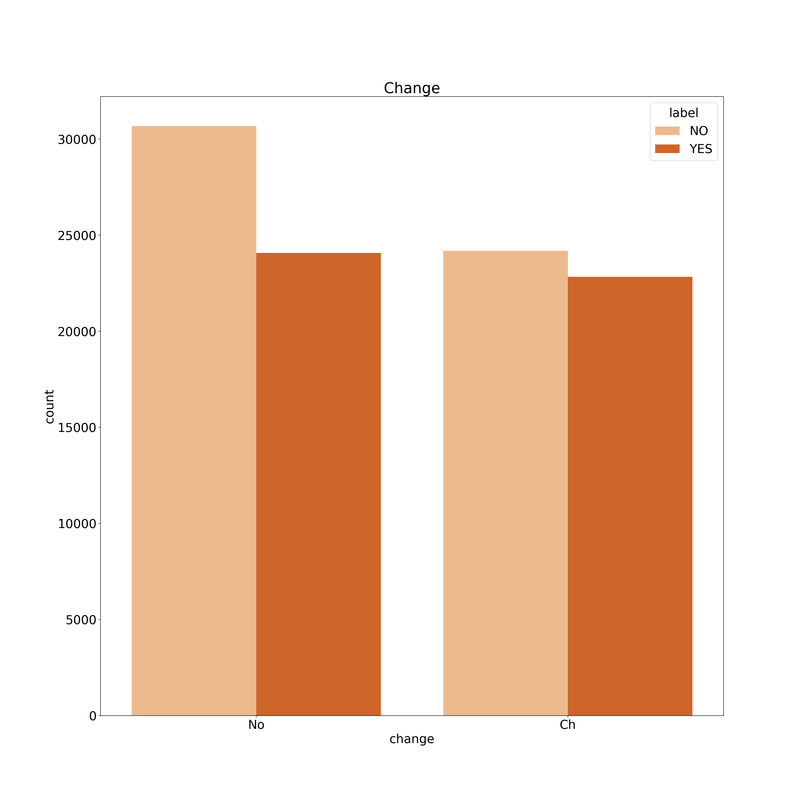
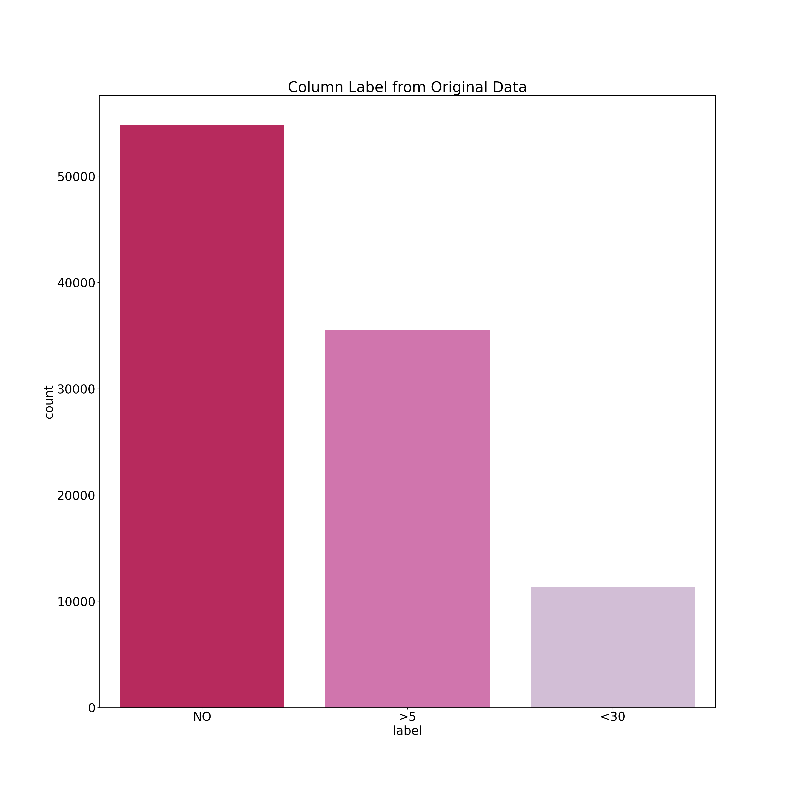
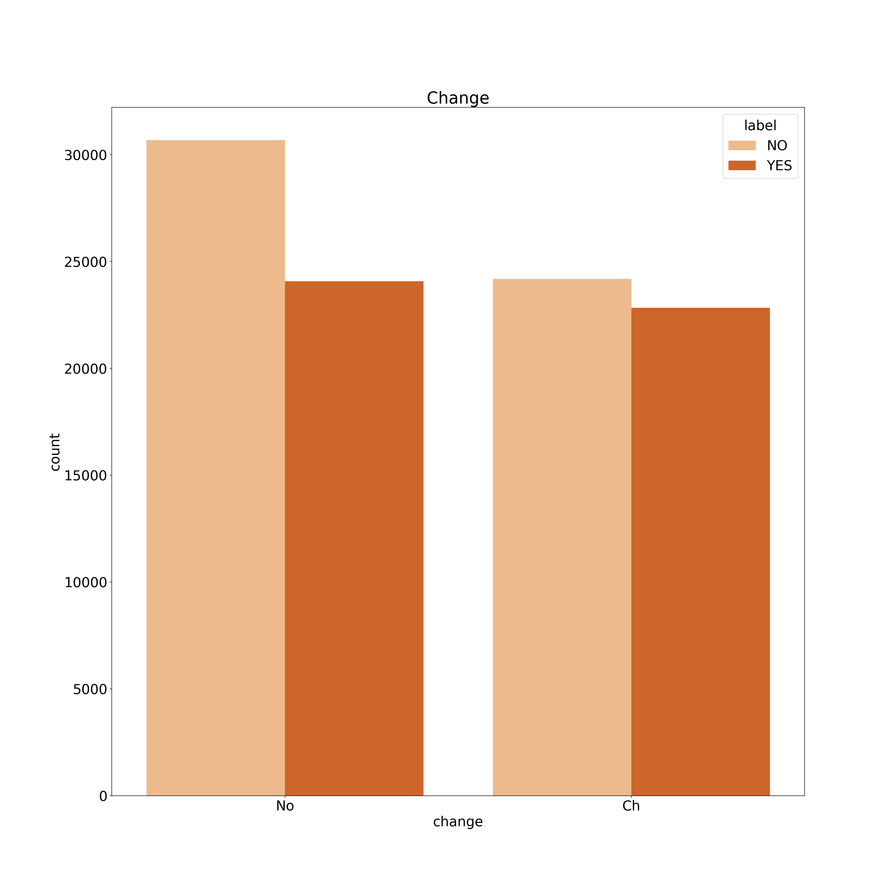
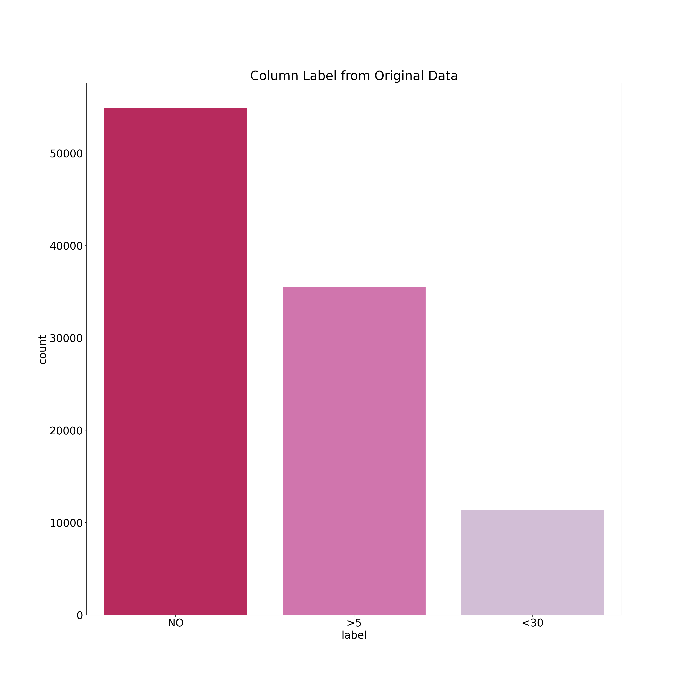

Visualizations
Correlation matrix of original(uncleaned) Data set
This is the correlation matrix of the original uncleaned data set, displayed using a heatmap.
Correlation matrix of final(cleaned) Data set
This is the correlation matrix of the final cleaned data set, displayed using a heatmap. 
Vislaizations for Factor Variables vs. Target Variables
Following visualizations help to decide visually about the variation present in each variable and hence its elimination or otherwise. As a result of these visualizations we decided to delete following variables:
- repaglinide, nateglinide, chlorpropamide, acetohexamide, tolbutamide, acarbose, miglitol, troglitazone, tolazamide, glyburide, glipizide, glimepiride.pioglitazone, metformin, metformin.pioglitazone, metformin.rosiglitazone
 
 
 The serum glucose or blood sugar level is a measurement of the amount of a particular form of simple sugar in the blood.
The serum glucose or blood sugar level is a measurement of the amount of a particular form of simple sugar in the blood. 
A1C is a blood test for type 2 diabetes and prediabetes. It measures your average blood glucose, or blood sugar, level over the past 3 months. Doctors may use the A1C alone or in combination with other diabetes tests to make a diagnosis. They also use the A1C to see how well you are managing your diabetes.  Metformin is a medicine used to treat type 2 diabetes, and to help prevent type 2 diabetes if you’re at high risk of developing it.
Metformin works by reducing the amount of sugar your liver releases into your blood. It also makes your body respond better to insulin. Insulin is the hormone that controls the level of sugar in your blood. It’s best to take metformin with a meal to reduce the side effects.  Repaglinide is an antidiabetic drug in the class of medications known as meglitinides, and was invented in 1983. Repaglinide is an oral medication used in addition to diet and exercise for blood sugar control in type 2 diabetes mellitus.
Repaglinide is an antidiabetic drug in the class of medications known as meglitinides, and was invented in 1983. Repaglinide is an oral medication used in addition to diet and exercise for blood sugar control in type 2 diabetes mellitus.  Nateglinide is an amino-acid derivative that lowers blood glucose levels by stimulating insulin secretion from the pancreas.
Nateglinide is an amino-acid derivative that lowers blood glucose levels by stimulating insulin secretion from the pancreas.  Chlorpropamide is an oral antihyperglycemic agent used for the treatment of non-insulin-dependent diabetes mellitus (NIDDM).
Chlorpropamide is an oral antihyperglycemic agent used for the treatment of non-insulin-dependent diabetes mellitus (NIDDM).
Chlorpropamide is used along with diet and exercise, and sometimes with other medications, to treat type 2 diabetes (condition in which the body does not use insulin normally and, therefore, cannot control the amount of sugar in the blood). 
Glimepiride lowers blood sugar by causing the pancreas to produce insulin (a natural substance that is needed to break down sugar in the body) and helping the body use insulin efficiently.Glimepiride, sold under the trade name Amaryl among others.
It is less preferred than metformin. Use is recommended together with diet and exercise.  Acetohexamide is a medication used to treat diabetes type 2, particularly in people whose diabetes cannot be controlled by diet alone.  Glipizide, sold under the brand name Glucotrol among others, is an anti-diabetic medication used to treat type 2 diabetes. It is used together with a diabetic diet and exercise. Glyburide lowers blood sugar by causing the pancreas to produce insulin (a natural substance that is needed to break down sugar in the body) and helping the body use insulin efficiently. This medication will only help lower blood sugar in people whose bodies produce insulin naturally.
Glipizide, sold under the brand name Glucotrol among others, is an anti-diabetic medication used to treat type 2 diabetes. It is used together with a diabetic diet and exercise. Glyburide lowers blood sugar by causing the pancreas to produce insulin (a natural substance that is needed to break down sugar in the body) and helping the body use insulin efficiently. This medication will only help lower blood sugar in people whose bodies produce insulin naturally.  Tolbutamide is used along with diet and exercise, and sometimes with other medications, to treat type 2 diabetes (condition in which the body does not use insulin normally and, therefore, cannot control the amount of sugar in the blood). This medication will only help lower blood sugar in people whose bodies produce insulin naturally.
Tolbutamide is used along with diet and exercise, and sometimes with other medications, to treat type 2 diabetes (condition in which the body does not use insulin normally and, therefore, cannot control the amount of sugar in the blood). This medication will only help lower blood sugar in people whose bodies produce insulin naturally.  Pioglitazone is used along with a proper diet and exercise program to control high blood sugar in patients with type 2 diabetes. Rosiglitazone (trade name Avandia) is an antidiabetic drug. It works as an insulin sensitizer, by binding to the PPAR(a unique set of fatty acid) in fat cells and making the cells more responsive to insulin.
Pioglitazone is used along with a proper diet and exercise program to control high blood sugar in patients with type 2 diabetes. Rosiglitazone (trade name Avandia) is an antidiabetic drug. It works as an insulin sensitizer, by binding to the PPAR(a unique set of fatty acid) in fat cells and making the cells more responsive to insulin.  Acarbose is an anti-diabetic drug used for slowing the action of certain chemicals that break down food to release glucose (sugar) into your blood. Slowing food digestion helps keep blood glucose from rising very high after meals. Miglitol is primarily used in diabetes of type 2 and is an oral anti-diabetic drug that acts by inhibiting the ability of the patient to break down complex carbohydrates into glucose.
Acarbose is an anti-diabetic drug used for slowing the action of certain chemicals that break down food to release glucose (sugar) into your blood. Slowing food digestion helps keep blood glucose from rising very high after meals. Miglitol is primarily used in diabetes of type 2 and is an oral anti-diabetic drug that acts by inhibiting the ability of the patient to break down complex carbohydrates into glucose.  Troglitazone is an antidiabetic and anti-inflammatory drug. It is used to help those with type 2 diabetes respond better to insulin and to reduce the amount of sugar produced by the liver.  Tolazamide is an oral blood glucose lowering drug used for people with Type 2 diabetes.  Insulin is a hormone that lowers the level of glucose (a type of sugar) in the blood. It’s made by the beta cells of the pancreas and released into the blood when the glucose level goes up, such as after eating. Insulin helps glucose enter the body’s cells, where it can be used for energy or stored for future use.
Troglitazone is an antidiabetic and anti-inflammatory drug. It is used to help those with type 2 diabetes respond better to insulin and to reduce the amount of sugar produced by the liver.  Tolazamide is an oral blood glucose lowering drug used for people with Type 2 diabetes.  Insulin is a hormone that lowers the level of glucose (a type of sugar) in the blood. It’s made by the beta cells of the pancreas and released into the blood when the glucose level goes up, such as after eating. Insulin helps glucose enter the body’s cells, where it can be used for energy or stored for future use.
Taking insulin helps you manage your blood sugar levels. Everybody with type 1 and some people with type 2 diabetes need to inject insulin to help manage their blood sugar levels.  This combination medication is used with a proper diet and exercise program to control high blood sugar in people with type 2 diabetes. It may also be used with other diabetes medications.
This combination medication is used with a proper diet and exercise program to control high blood sugar in people with type 2 diabetes. It may also be used with other diabetes medications.
This product contains 2 medications. Both of these medications work by helping to restore your body’s proper response to the insulin you naturally produce.  Glipizide-Metformin diabetes medication is a combination of 2 drugs (glipizide and metformin). Both of these medications work by helping to restore your body’s proper response to the insulin you naturally produce. It is used along with a diet and exercise program to control high blood sugar in patients with type 2 diabetes.
Glipizide-Metformin diabetes medication is a combination of 2 drugs (glipizide and metformin). Both of these medications work by helping to restore your body’s proper response to the insulin you naturally produce. It is used along with a diet and exercise program to control high blood sugar in patients with type 2 diabetes.  Glimepiride-Pioglitazone medication is a combination of 2 drugs, pioglitazone and glimepiride. It is used along with a proper diet and exercise program to control high blood sugar in patients with type 2 diabetes. Controlling high blood sugar helps prevent kidney damage, blindness, nerve problems, loss of limbs, and sexual function problems. Proper control of diabetes may also lessen your risk of a heart attack or stroke.
Glimepiride-Pioglitazone medication is a combination of 2 drugs, pioglitazone and glimepiride. It is used along with a proper diet and exercise program to control high blood sugar in patients with type 2 diabetes. Controlling high blood sugar helps prevent kidney damage, blindness, nerve problems, loss of limbs, and sexual function problems. Proper control of diabetes may also lessen your risk of a heart attack or stroke. 
Metformin-Rosiglitazone is an oral antidiabetic agent, which acts primarily by increasing insulin sensitivity. It has now been discontinued due to too many side effects and has caused heart failure in some patients. 
This combination medication is used along with a proper diet and exercise program to control high blood sugar in people with type 2 diabetes. Controlling high blood sugar helps prevent kidney damage, blindness, nerve problems, loss of limbs, and sexual function problems. Proper control of diabetes may also lessen your risk of a heart attack or stroke.
Talk to your doctor about the risks and benefits of using pioglitazone-containing products. 


Label visualizaion of Original uncleaned data

Label visualizaion of Final cleaned data